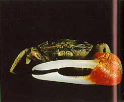
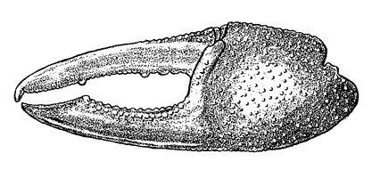

Fiddler Crabs
Uca signata
Signaling Fiddler Crab
Type
Information
Photos
Video
Art
References
Species List
Type Description
Gelasimus signatus
Hess, W. (1865) Beiträge zur Kenntniss der Decapoden-Krebse ost-Australiens.
Archiv für Naturgescicthe
31(1):127–173.
Information
Subgenus
Australuca
Common Names
Signaling Fiddler Crab
Synonyms, Alternate Spellings, & Name Forms
Gelasimus signatus
,
Uca (Australuca) bellator minima
,
Uca (Australuca) bellator signata
,
Uca (Australuca) signata
,
Uca signata
,
Uca signatus
Geographic Range
Indo-West Pacific: Australia (Northwest coast through Northeast coast)
Download SVG line map of ranges.
Map data derived from:
George & Jones (1982)
;
von Hagen & Jones (1989)
External Links
Encyclopedia of Life
Wikipedia
iNaturalist
NCBI Taxonomy Browser/Genbank
GBIF
Photos

Video
No videos available at this time.
Art

References
Beinlich, B., and H.-O. von Hagen (2006) Materials for a more stable subdivision of the genus
Uca
Leach.
Zoologische Mededelingen
80(4):9–32.
Bott, R. (1973) Die verwandtschaftlichen Beziehungen der
Uca
-Arten (Decapoda: Ocypodidae).
Senckenbergiana biologica
54(4–6):315–325.
Crane, J. (1957) Basic patterns of display in fiddler crabs (Ocypodidae, Genus
Uca
).
Zoologica NY
42:69–82.
Crane, J. (1975)
Fiddler Crabs of the World: Ocypodidae: Genus Uca
. Princeton, NJ: Princeton University Press.
De Man, J.G. (1887) Uebersicht der indo-pacifischen Arten der Gattung
Sesarma
Say, nebst einer Kritik der von W. Hess und E. Nauck in den Jahren 1865 und 1880 beschriebenen Decapoden.
Zoologische Jahrbücher. Abteilung für Systematik, Ökologie und Geographie der Thiere
2(3–4):639–722.
De Man, J.G. (1891) Carcinological studies in the Leyden Museum. No. 5.
Notes from the Leyden Museum
13(1):1–61.
De Man, J.G. (1892) Decapoda des indischen Archipels. Pp. 265–527 in
Zoologische Ergebnisse einer Reise in Niederlandisch Ost-Indien
, M. Weber, ed., Volume 2. Leiden: Brill.
Estampador, E.P. (1937) A check list of Philippine crustacean decapods.
Philippine Journal of Science
62(4):465–559.
Estampador, E.P. (1959) Revised check list of Philippine crustacean decapods.
Natural & Applied Sci. Bull. Coll. Liberal Arts, Univ. of Philippines
17(1):100–103.
George, R.W., and D.S. Jones (1982) A revision of the fiddler crabs of Australia (Ocypodinae
: Uca
).
Record of the Western Australian Museum Supplement
14:1–99.
Gordon, I. (1934) Crustacea Brachyura. Pp. 1–78 in
Résultats scientifique du voyage aux Indes Orientales Néerl. de la Prince Léopold de Belgique
, Volume III (15)
Haswell, W.A. (1882)
Catalogue of the Australian stalk-eyed and sessile-eyed Crustacea
. Sydney.
Hess, W. (1865) Beiträge zur Kenntniss der Decapoden-Krebse ost-Australiens.
Archiv für Naturgescicthe
31(1):127–173.
Kingsley, J.S. (1880) Carcinological notes, No. II.-Revision of the Gelasimi.
Proceedings of the Academy of Natural Sciences of Philadelphia
1880(1):135–155.
Maccagno, T. (1928) Crostacei Decapodi. Le specie del genere
Uca
Leach conservate nel Regio Museo Zoologico di Torino.
Bollettino dei Musei di Zoologia ed Anatomia comparata della R. Università di Torino
41(11):1–52.
Macnae, W. (1966) Mangroves in eastern and southern Australia.
Australian Journal of Botany
14(1):67–104.
Macnae, W. (1967) Zonation within mangroves associated with estuaries in North Queensland. Pp. 432–441 in
Estuaries
, G.H. Lauff, ed., Volume 83. Washington, D.C.: AAAS Publication.
McNeill, F.A. (1920) Studies in Australian carcinology. No. 1.
Records of the Australian Museum
13:105–109.
Miers, E.J. (1884) The Collections from Melanesia: Crustacea. Pp. 178–322 in
Report of the zoological collections made in the Indo-Pacific Ocean during the voyage of the H.M.S. 'Alert,' 1881-1882
. London
Ortmann, A.E. (1894) Die Decapoden-Krebse des Strassburger Museums, mit besonderer Berücksichtigung der von Herrn Dr. Döderlein bei Japan und bei den Liu-Kiu-Inseln gesammelten und zur Zeit im Strassburger Museum aufbewahrten Formen. VIII. Abtheilung: Brachyura (Brachyura genuina Boas) III. Unterabtheilung: Cancroidea, 2. Section: Canerinea, 2. Gruppe: Catametopa.
Zoologische Jahrbücher. Abtheilung für Systematik, Geographie und Biologie der Thiere
7(5):683–772.
Ortmann, A.E. (1897) Carcinologische Studien.
Zoologische Jahrbücher. Abtheilung für Systematik, Geographie und Biologie der Thiere
10(3):258–372.
Schäfer, W. (1954) Form und Funktion der Brachyuren-Schere.
Abhandlungen der Senckenbergischen Naturforschenden Gesellschaft
489:1–65.
Tweedie, M.W.F. (1950) Grapsoid crabs from Labuan and Sarawak.
Sarawak Museum Journal
5(2):338–369.
{kind=link}